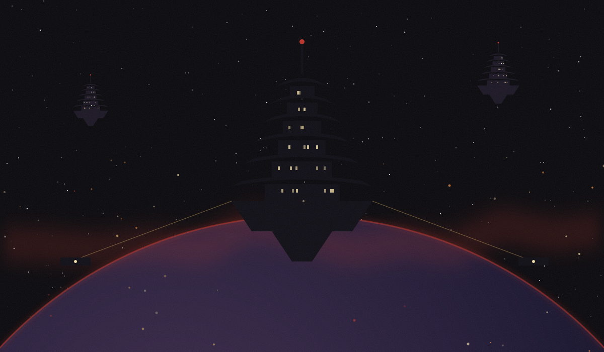

Devlog 01 — Un ronin dans l'espace : pourquoi un souls-like de science-fiction
Un croquis à l'encre, une éclipse au-dessus de la Sainte-Victoire et une question : que devient l'honneur d'un samouraï quand son soleil s'éteint ?

Bienvenue dans le premier devlog de Flexarion ! Chaque mois, l'équipe racontera ici la fabrication de notre jeu, Ronin of the Black Sun, avec ses réussites, ses impasses et ses chiffres. Pour commencer, il fallait répondre à la question qu'on nous pose le plus souvent : pourquoi un samouraï dans l'espace ?
Tout est parti d'un croquis
Pendant une game jam à Aix-en-Provence, sur le thème « l'honneur », j'ai dessiné à l'encre un ronin de dos, face à un soleil éclipsé. Pas de décor, pas d'époque : juste un chapeau de paille, une lame et un disque noir cerclé d'or. Idriss a regardé le dessin et a dit : « Et si ce soleil était une étoile morte, et que le shogun l'avait éteinte lui-même ? » Ronin of the Black Sun venait de naître.
Pourquoi un souls-like ?
Parce que le genre raconte exactement ce que vit un ronin : la solitude, l'échec répété, et la maîtrise qui vient lentement. Dans un souls-like, mourir n'est pas une punition, c'est une leçon. Chaque duel perdu vous apprend quelque chose sur votre adversaire, et sur vous-même.
Nous voulions aussi des combats où la précision compte plus que les statistiques. Un bon joueur doit pouvoir vaincre un Daimyō du Vide avec l'équipement de départ. C'est difficile, mais c'est possible.
Pourquoi l'espace ?
Le Japon féodal et la science-fiction partagent un thème que nous aimons : la fin d'un monde. Les samouraïs ont vu disparaître leur ordre ; nos personnages voient s'éteindre leur étoile. L'espace nous offre aussi ce que la Terre ne peut pas donner : des duels en apesanteur, des châteaux qui flottent en orbite et un silence absolu entre deux coups de lame.
Dans Ronin of the Black Sun, le Shogunat de Kurogane a scellé la lumière du Soleil Noir pour en faire une arme. Vous incarnez Kaïen, le dernier samouraï du clan Hoshino, exécuté pour avoir refusé d'obéir, puis ramené à la vie trois siècles plus tard par un Torii de lumière.

Ce que nous ne ferons pas
- Pas de difficulté gratuite : chaque mort doit être compréhensible.
- Pas de monde ouvert vide : sept châteaux denses plutôt qu'une carte immense.
- Pas de clichés : nous travaillons avec des pratiquants de kendo et relisons nos textes japonais avec une traductrice.
Pourquoi depuis Aix-en-Provence ?
Parce que c'est ici que l'équipe s'est rencontrée, et parce que la Sainte-Victoire nous a donné notre image la plus forte. Un soir, en la regardant se découper sur un ciel rouge, nous avons compris que le Soleil Noir devait être visible depuis tout le jeu, comme la montagne l'est depuis toute la ville. Pour en savoir plus, lisez l'histoire du studio Flexarion.
Et ensuite ?
Le prochain devlog détaillera le système de combat du jeu : parade, posture et apesanteur. D'ici là, découvrez le jeu en détail.
Maëlle Roux · Direction créative
Membre de l'équipe Flexarion, studio de jeux vidéo indépendant à Aix-en-Provence.